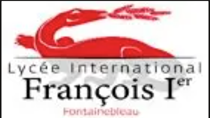
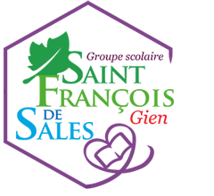
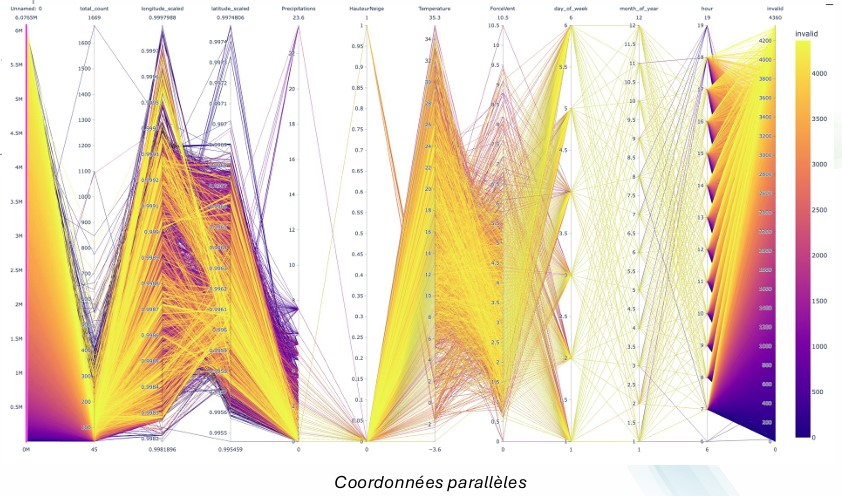
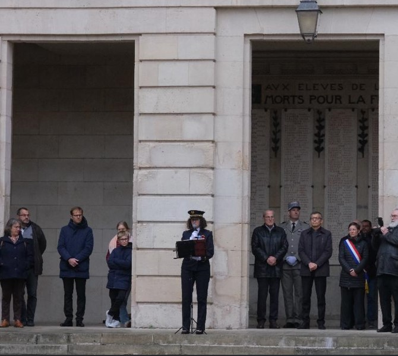
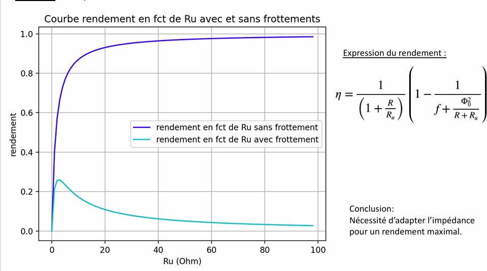
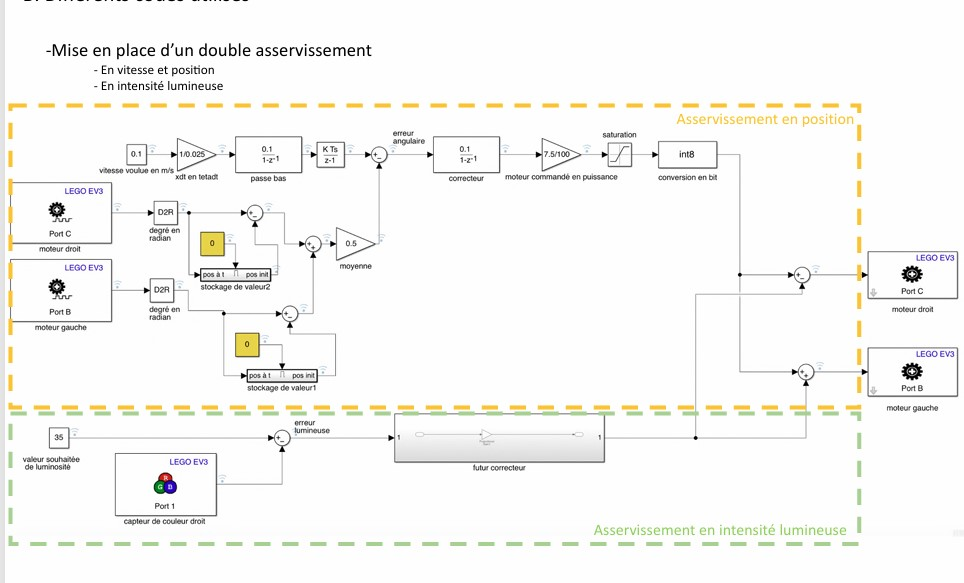
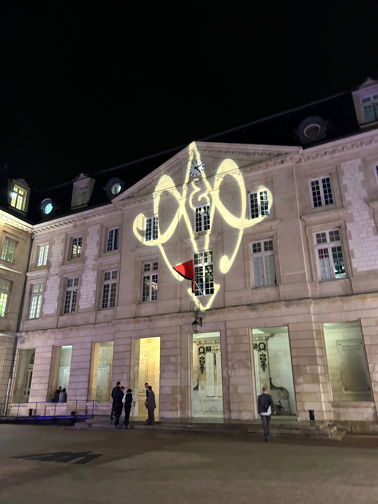
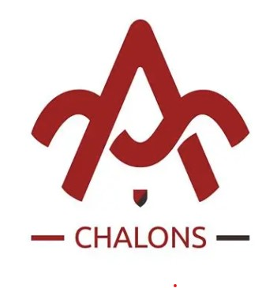

Arts et Métiers ParisTech
Paris, France
2023 – 2026
- General Engineering Degree
- Specialization in Industrial Engineering and Artificial Intelligence
- Supply Chain, Data Analytics & Digital Transformation
- Student Association President
Arts et Métiers Engineering Student - AI & Business Transformation
Passionate about industrial engineering, digital transformation and artificial intelligence, I am currently an engineering student at Arts et Métiers and pursuing a Master's degree in Leadership & Artificial Intelligence at Albert School. My experiences in Supply Chain, data analytics and industrial project management have strengthened my interest in solving business challenges through technology and innovation.
Paris, France
2023 – 2026
Paris, France
2026 – 2027

Fontainebleau, France
2020 – 2023

Gien, France
2017 – 2020
Milan, Italy
Feb 2026 – Present
Sens, France
Jun 2025 – Jul 2025
Sens, France
Jun 2024
Development of VBA tools, Power Apps solutions and reporting automation to support supply chain transformation initiatives.

Design of production performance indicators and visualization tools to support manufacturing monitoring and operational efficiency.

Machine learning project using more than 6 million records to predict parking violations and optimize scan-car deployment strategies.
View Presentation
End-to-end design and deployment of an industrial testing bench integrating electrical, mechanical and operational constraints.

Management of a student organization, budget supervision and coordination of large-scale projects and events for more than 200 students.

Experimental and numerical study of energy recovery systems applied to stationary bicycles, including modeling and data analysis.
Download PDF
Development and simulation of an autonomous lane-keeping assistance system combining control engineering and vehicle dynamics.
Download PDF
Organization of the annual Arts et Métiers gala, including partner relations, logistics coordination and event planning.

Vice-présidente de l'association XYZ…
Feel free to reach out for professional opportunities, collaborations or simply to connect.